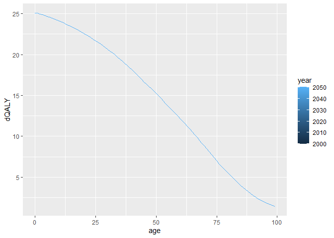
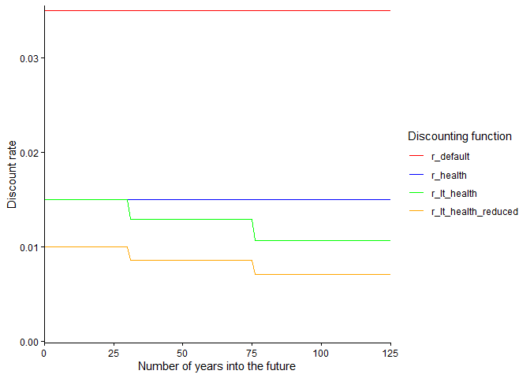
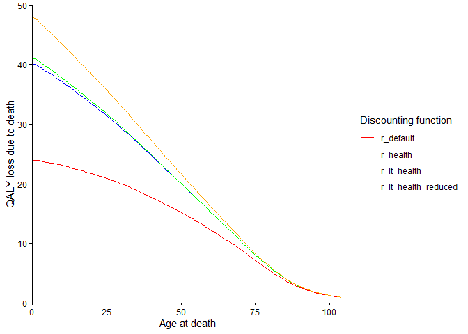

This package is currently under active development and the code/documentation is subject to change.
The quality-adjusted life year, or QALY, is a widely used outcome measure in the field of health economics. When evaluating the impact of a policy/programme/intervention, we often want to express the health impacts of preventing or failing to prevent a death in terms of the QALYs that would be gained or lost.
We can make an estimate of the number of QALYs that might be lost when a person dies using data that describes the life expectancy and health-related quality of life (HRQoL) of the population that the person came from. We can estimate average QALY loss values across population age/sex subgroups if we additionally have information on the age/sex distribution of the population.
In the dQALY package, we provide a function that performs this calculation using life expectancy, HRQoL, and (when needed) population distribution data. We have also gathered, cleaned and stored these three types of data for a range of countries and years. For convenience, users can quickly/easily produce QALY loss estimates with the data stored by the package. For flexibility, users can choose to make adjustments to the default or package data, or to supply entirely new data inputs to the calculation.
This package has been built using code adapted from the COVID19_QALY_App, written by Nichola Naylor at LSHTM. The COVID19_QALY_App was itself adapted from an Excel tool built by Andrew Briggs to operationalise the methods for calculating QALY loss due to death that he & others set out in a letter published in the journal Health Economics in 2020. For more details on the calculation that produces the estimates, refer to the methods vignette.
Installation
You can install the development version of dQALY from GitHub with:
# install.packages("pak")
pak::pak("katehayes/dQALY")Calculating QALY loss due to death: get started using package data
The function calculate_dQALY produces estimates of QALY loss due to death for a given population. We’ll call this quantity dQALY (i.e. difference in QALYs, like Leibniz notation).
To use the function, you have to minimally specify a country and year for which you want the calculation performed. The calculation requires life expectancy and HRQoL data. By default, the function uses data on life expectancy and health-related quality of life that has been stored in the package:
calculate_dQALY(country = "United Kingdom", year = 2015) |> head()
#> sex age dQALY
#> 1 female 0 25.20285
#> 2 male 0 24.91002
#> 3 female 1 25.19784
#> 4 male 1 24.92008
#> 5 female 2 25.11352
#> 6 male 2 24.82673
calculate_dQALY(country = "France", year = 2020) |> head()
#> sex age dQALY
#> 1 female 0 25.74592
#> 2 male 0 25.36175
#> 3 female 1 25.74985
#> 4 male 1 25.36617
#> 5 female 2 25.67541
#> 6 male 2 25.27770If data for the country or year you specified isn’t stored in the package, you’ll get an error message informing you of that.
calculate_dQALY(country = "Scotland", year = 2015)
#> Error in `package_lt()`:
#> ! Value for `country` must be chosen from the list of available
#> countries. Use hrqol_norms() to see the list.
calculate_dQALY(country = "United Kingdom", year = 2010)
#> Error in `package_lt()`:
#> ! Currently the package only stores life table data for United Kingdom for the years 2015-2023.
#> Please set `year` to a value within this period.Instead of returning estimates by sex and age at death, the function can also output mean dQALY values for user-specified population groups by using population data to take weighted averages. Note: for every country with HRQoL norms available, the package stores life expectancy and population distribution data.
Here, we’re using the argument collapse_sex to output an estimate of QALY loss due to death for each year of age regardless of sex (i.e. for both sexes together):
calculate_dQALY(country = "United Kingdom", year = 2015, collapse_sex = T) |> head()
#> age dQALY
#> 1 0 25.05262
#> 2 1 25.05541
#> 3 2 24.96654
#> 4 3 24.87112
#> 5 4 24.77174
#> 6 5 24.66846Here we’re using the argument collapse_age to output average values for a set of age groups. To do this we need to specify our age groups as follows (in the form of a dataframe, tibble or datatable with columns ‘lower’ and ‘upper’):
my_age_groups <- data.table(lower = c(0, 90), upper = c(89, 99))
calculate_dQALY(country = "United Kingdom", year = 2015, collapse_age = my_age_groups)
#> age lower upper sex dQALY
#> 1 0-89 0 89 female 17.414236
#> 2 0-89 0 89 male 17.237184
#> 3 90-99 90 99 female 2.383301
#> 4 90-99 90 99 male 2.262557Lastly, here we’re outputting average values for both sexes together and for the specified age groups:
calculate_dQALY(country = "United Kingdom", year = 2015, collapse_sex = T, collapse_age = my_age_groups)
#> age lower upper dQALY
#> 1 0-89 0 89 17.327103
#> 2 90-99 90 99 2.347774
rbindlist(lapply(2000:2050, function(y) as.data.table(calculate_dQALY(country = "United Kingdom", year = 2015, collapse_sex = T))[, year := y])) |>
ggplot() +
geom_line(aes(x = age, y = dQALY, colour = year))
Functions for interacting with package data
Here we’ll introduce some functions that will be referred to collectively as package data functions - i.e. functions that allow the user to interact with the data stored by the package. Two functions - hrqol_norms and default_norms - return information about the package HRQoL data. Three functions - package_lt, package_norms and package_cohort - return or can make small adjustments to package data, to life tables, HRQoL norms and cohort data respectively.
We’ve seen that, for convenience, the function calculate_dQALY can be called by specifying values for arguments country and year, and the calculation will be performed using input data stored within the package. Flexibility is provided by the arguments life_table, norms and cohort - with these three arguments the user can adjust/change the input data supplied to the calculation.
The default value of each of these arguments is a call to the package data function which returns the relevant type of package data, with the package data functions inheriting values from their arguments from the values for country and (when needed) year supplied to calculate_dQALY. In other words, the function call calculate_dQALY(country = "England", year = 2020) is equivalent to the call calculate_dQALY(life_table = package_lt(country = "England", year = "2020"), norms = package_norms(country = "England"), cohort = package_cohort(country = "England", year = "2020")).
Health related quality of life (HRQoL) population norm data
HRQoL norms themselves are constructed from health state data & value sets. Some discussion of HRQoL norms can be found on the EuroQol website.
Unlike life tables and population data, country-level norm data is not released regularly/yearly - however, many countries have more than one set of HRQoL norms stored in the package data. The list of available HRQoL norms and their IDs can be viewed using the hrqol_norms function. This function also returns information we have documented about the make-up of each set of HRQoL norms - specifically, about the health state data and value sets from which the norms are constructed (note: we have tried to adopt the same terminology/categorisation scheme used by the eq5d package to document information about value sets). Results can be filtered by country, and returned with or without reference information:
# Return all English utility norm sets without reference information
hrqol_norms(country = "England", references = F)
#> norm_country eq5d_data_year norm_id eq5d_data_version value_set_country
#> 1 England 2008 janssen_euvas EQ-5D-3L Europe
#> 2 England 2008 janssen_tto EQ-5D-3L England
#> 3 England 2008 janssen_vas EQ-5D-3L England
#> 4 England 2017-2018 vih_primary EQ-5D-5L England
#> 5 England 2017-2018 vih_secondary EQ-5D-5L England
#> value_set_version value_set_type value_set_year default
#> 1 EQ-5D-3L VAS FALSE
#> 2 EQ-5D-3L TTO FALSE
#> 3 EQ-5D-3L VAS FALSE
#> 4 EQ-5D-3L DSU 1993 TRUE
#> 5 EQ-5D-3L CW 1993 FALSEWe can see that the package stores five different sets of English HRQoL population norm data. We can also see how these norms differ from each other with regards to what population the health state was data gathered from/ what population valued the health states/ when the data was collected/ what methods were used to elicit the states/values.
So, contextual information about package norms can be returned using hrqol_norms - another way for the user to explore package norms is to return the actual norms themselves using the function package_norms:
package_norms(country = "England", id = "janssen_euvas") |> head()
#> lower upper sex avg_hrqol
#> 1 0 17 female 0.922
#> 2 0 17 male 0.922
#> 3 18 24 female 0.922
#> 4 18 24 male 0.922
#> 5 25 34 female 0.915
#> 6 25 34 male 0.915
package_norms(country = "England", id = "vih_secondary") |> head()
#> lower upper sex avg_hrqol
#> 1 0 15 female 0.881
#> 2 0 15 male 0.916
#> 3 16 17 female 0.881
#> 4 16 17 male 0.916
#> 5 18 19 female 0.864
#> 6 18 19 male 0.933For every country, we have chosen a set of default norms based on a range of considerations (e.g. recommendations from HTA decision-making bodies, how recent they are, the methodologies used in their construction). The default set is indicated in the info returned by the hrqol_norms function, or alternatively its ID is returned directly by the function default_norms - for England, the default norms have ID “vih_primary”.
These are the norms that will be returned when the package_norms function is called without specifying a value for the id argument. These are also the norms that will be used when the calculate_dQALY function is called without specifying a value for the norms argument.
all.equal(default_norms(country = "England"), "vih_primary")
#> [1] TRUE
all.equal(package_norms(country = "England"), package_norms(country = "England", id = "vih_primary"))
#> [1] TRUE
all.equal(calculate_dQALY(country = "England", year = 2020),
calculate_dQALY(country = "England", year = 2020,
norms = package_norms(country = "England", id = "vih_primary")))
#> [1] TRUEAlternatively, the user can specify what set of package norms they would like to use in their QALY loss calculation by passing its ID to the norms argument. Hopefully, being able to access information about the norms that the package stores via hrqol_norms and package_norms functions allows the user to understand the implications of choosing to use one set of norms over another - and to make a judgement about the set of norms that is most appropriate for their purposes.
It is also possible for the user to supply their own norm data to the calculation - we’ll return to this topic in the demo vignette, and guidance can also be found in function documentation.
Discounting functions
The third and last type of function provided by the package is the discounting function.
To get the net present value to society of the quality-adjusted life years that are ‘lost’ when an individual dies, we typically apply a discount rate which reflects the idea that, to us in the present, the value of QALYs that would be experienced years into the future is less than the value of QALYs experienced today. In our package, the default discount rate is set at 3.5% as per the NICE health technology evaluations manual. However, the most appropriate discount rate to apply will differ according to the context of the evaluation/analysis. The Green Book, guidance on evaluation methods issued by the Treasury, discusses a number of discounting regimes and the reasons one might use them.
The function calculate_dQALY allows the user to specify the discount rate they would like to use in the calculation via setting the value of the argument r. r can be a scalar numeric (e.g. for a discount rate of 1%, set r = 0.01) or, so that the discount rate can vary across time, r also accepts vectorised functions (e.g. for a discount rate of 2% a year for 50 years into the future and 1% a year thereafter, set r = function(x) ifelse(x < 50, 0.02, 0.01)).
This package includes four discount rate functions that users can pass to calculate_dQALY, each of which implements a particular discounting regime recommended by the NICE HTA manual or Green Book:
r_default
|
NICE reference case discount rate/ Green Book standard Social Time Preference Rate |
r_health
|
NICE alternative discount rate/Green Book recommended discount rate for health or life values |
r_lt_health
|
Green Book recommended declining long term discount rate for health or life values |
r_lt_health_reduced
|
Green Book recommended rate reduced by excluding pure social time preference (relevant if intervention may effect substantial/irreversible wealth transfers between generations) |
The plots below show the values of the discount rate functions across time, and the impact of varying discount rates on the estimates of QALY loss associated with death across the life-course.

